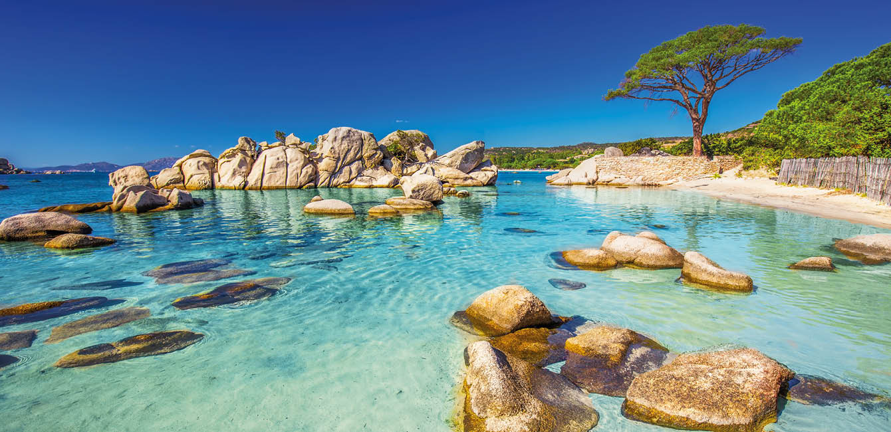
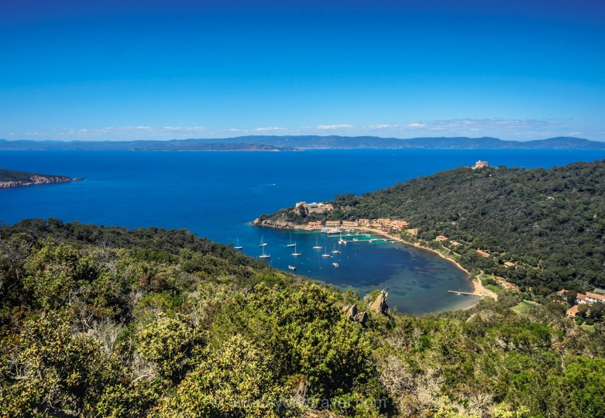

Korsika

Die Insel Korsika gehört zu Frankreich. Die Insel ist 8.681 Quadratkilometer groß und wird von 275.000 Korsen bewohnt. Hauptstadt ist Ajaccio. Eine Insel für alle! Es gibt nur wenig, was die viertgrößte Insel im Mittelmeer nicht bietet: Skifahren auf 2000 Meter hohen Bergen, Buchten mit feinen Sandstränden und Pinienhainen, Naturschutzgebiete zum Wandern und auch Segler kommen auf ihre Kosten. Beste Reisezeit: Skifahrer kommen im Januar und Februar, Strandurlauber zwischen Ende Mai und Mitte September und wer vor allem wandern will, reist zwischen Juni und September an.
Îles d'Hyères
